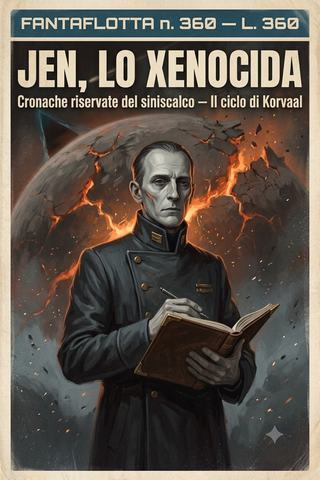

Jen, lo Xenocida · racconto 2 di 4
Il prezzo di Macragge
La più grande vittoria a cui abbia partecipato, e il conto — un mondo-fortezza, trecentosessanta milioni — che la pagò.
- ≈ 66 min di lettura
- dalle partite a Rogue Trader
- il volume in EPUB, 2,2 MB
Cronaca riservata del siniscalco Jen — ad uso del comandante Korvaal, e di nessun altro.
Anno 38015 dell’Era Imperiale.
Prologo — L’aritmetica
Sono nato in un formicaio, e chi nasce in un formicaio impara presto due cose.
La prima è che l’aria costa. La respiri a debito, come tutto il resto, e da qualche parte molto in alto, in un ufficio che non vedrai mai, un tale che non incontrerai mai tiene il conto di quanti respiri ti restano prima che diventi più conveniente riciclarti.
La seconda è che gli esseri umani no. Gli esseri umani non costano niente. Ce ne sono troppi perché costino qualcosa. Da bambino ho visto un uomo morire in un corridoio di servizio del mio livello, e nessuno pianse, e nessuno pregò. Bloccava il passaggio, ecco tutto. Il problema non era che fosse morto. Il problema era che era ingombrante.1
Questo, prima di ogni altra cosa, è ciò che dovete sapere di me: che ho imparato a contare le persone nello stesso modo in cui si contano le razioni, le pallottole e i giorni di viaggio. Non per crudeltà. La crudeltà richiede che l’altro conti abbastanza da valere la pena di odiarlo. Io ho imparato qualcosa di più economico. Ho imparato a non arrotondarli nemmeno per eccesso.
Non nacqui così. Nessuno nasce così; è una cosa che si impara, e io la imparai giovane, nel modo in cui si imparano le lezioni che restano: da un dolore, e poi dalla sua assenza. Il primo cadavere che vidi da bambino — quell’uomo nel corridoio di servizio — mi fece qualcosa, la prima volta. Un tremore, un nodo, l’inizio di ciò che gli altri chiamano pietà. Ma nel formicaio la pietà è una spesa che non ti puoi permettere, perché i cadaveri non erano rari: erano il tempo atmosferico. Ne vedevo uno a settimana, poi uno al giorno, poi smisi di contarli come eventi e cominciai a contarli come quantità — ed è nel passaggio dall’evento alla quantità che un uomo diventa ciò che sono io. Un evento ti tocca. Una quantità la registri. Il bambino che ero fece, senza saperlo, l’unico calcolo che il formicaio insegna davvero: che il dolore per ogni morto, moltiplicato per il numero dei morti che avrei visto, superava di gran lunga ciò che un’anima può spendere in una vita — e che dunque, per sopravvivere, quel dolore andava azzerato alla fonte, non speso a rate fino al fallimento. Azzerai. Non fu una scelta filosofica; fu un istinto di sopravvivenza, lo stesso per cui il corpo, sott’acqua, smette di respirare. Chiusi la voce «pietà» prima ancora di aver imparato a scriverla, e non la riaprii mai più. Chi mi giudica dall’alto di un mondo dove i morti si contano a uno a uno, e ognuno ha un funerale, non capirà mai questa aritmetica. Ma chi è nato dove sono nato io la conosce, e sa che non è mostruosità. È contabilità applicata alla sopravvivenza dell’anima: quando le perdite superano il capitale, si chiude il conto prima di andare in rovina. Io chiusi il conto della pietà a sette anni. Tutto ciò che di me leggerete in queste pagine è il rendiconto, freddo e in pareggio, di quella singola, precocissima decisione di bilancio.
L’Imperium dell’Uomo è il più grande registro contabile mai tenuto. Un milione di mondi, un trilione di anime, tutte archiviate sotto la voce riserva, tutte spendibili nel momento in cui la colonna dei costi lo richieda. Chi vi dice il contrario o vi sta mentendo, o non ha mai lavorato coi numeri veri. Io coi numeri veri ci ho lavorato tutta la vita. E in tutta la vita una sola cifra si è rifiutata di lasciarsi arrotondare.
Il comandante Korvaal.
Non vi spiegherò perché. Le ragioni del cuore sono l’unica materia su cui non tengo registro, e comunque non vi riguardano. Sappiate soltanto che, nell’intero creato, esiste un unico punto che per me non è sostituibile, non è fungibile, non ha un valore di rimpiazzo, e che tutto il resto — voi compresi, lettore, chiunque siate — appartiene alla categoria delle cose che si possono perdere e ricomprare.
Metto tutto questo in chiaro all’inizio perché ciò che segue è il verbale di una vittoria. La più grande a cui abbia partecipato. E perché voglio che sappiate, prima di cominciare, che io quella vittoria l’ho firmata, e la rifirmerei, e che se in queste pagine cercate qualcuno che, al momento giusto, provi rimorso al posto vostro, avete sbagliato cronaca.
Mi chiamano lo Xenocida. Se avrò fatto bene il mio lavoro di cronista, alla fine capirete che l’epiteto è impreciso soltanto per difetto.
Cominciamo dai numeri.
Capitolo primo — La leggenda
Registro riservato — voce: sistema Ultramar, prima udienza. Rischio stimato di annientamento immediato dell’equipaggio, in caso di sospetto di infedeltà: totale. Contromisure disponibili a bordo: nessuna. Raccomandazione operativa: sorridere, e tenere le mani lontane dai comandi di lancio.
Ultramar è un nome che pesa. Lo pesa perfino su un uomo come me, che i nomi li ho sempre trattati come voci di inventario. Il primo territorio del braccio galattico, il reame degli angeli azzurri, il luogo dove diecimila anni fa un dio-uomo camminò e governò e insegnò ai suoi figli a costruire mondi che durassero. Nella piccola flotta del comandante non c’era marinaio, per quanto rozzo, che non avesse sentito almeno una delle leggende; e la possibilità di vedere quei luoghi coi propri occhi spinse l’entusiasmo di molti oltre il limite del buon senso.
Io mi tenni al di qua del limite. È il mio posto abituale.
La nostra scorta si presentò sotto forma di una nave da guerra chiamata Furore di Macragge, e di una figura sullo schermo del multivideo che il comandante volle io vedessi bene, per potergli poi riferire ogni sfumatura. Era un semidio. Non uso la parola per abbellire il verbale. Era un uomo alto come due uomini, chiuso in un’armatura che portava centinaia di onorificenze e altrettante cicatrici, e ognuna di quelle cicatrici era la testimonianza di qualcosa che aveva provato a ucciderlo e aveva fallito. Il capitano Invictus, degli Ultramarine.
Chiese di salire a bordo per un colloquio. Kryptmann acconsentì, e propose l’Ira di Akilius come luogo dell’incontro, il che mi diede da lavorare, perché ospitare un angelo dell’Imperatore sulla nave del comandante significava, in pratica, invitare un giudice a cena e sperare che non guardasse sotto il tappeto. E sotto il tappeto, a prua, dormivano due siluri di fabbricazione xeno grandi come navi, capaci di sterilizzare un pianeta, e la cui sola esistenza a bordo era motivo sufficiente perché quel semidio ci cancellasse dalla faccia della galassia senza alzare la voce.
La Thunderhawk entrò negli hangar mezz’ora dopo. Ne discesero Invictus, un vessillario alto quanto lui, e quattro guardie d’onore con asce che sfrigolavano di energia. Una di loro si rivolse a Galdor — il nostro ufficiale medico, l’unico dei pezzi grossi del comandante che avesse ancora la decenza di sembrare un soldato dell’Imperatore — e gli chiese, con cortesia impeccabile, se fosse concesso portare armi a bordo. Galdor disse di sì. Naturalmente disse di sì. Non credo esista al mondo l’uomo con abbastanza fegato da confiscare l’ascia a un simile essere, e comunque Galdor non è tipo da fingere di averlo.
Li scortai nella sala consigliare del comandante. Mentre Kryptmann esponeva i fatti che ci avevano condotti fin lì — la flotta xeno nell’orbita di Tyran Primus, le bionavi impossibili, gli orrori sul pianeta —, io feci ciò che faccio sempre: guardai la stanza. E notai che le quattro guardie d’onore, senza scambiarsi un segnale, senza apparente accordo, si erano disposte esattamente nei quattro punti da cui si controlla una sala di quelle dimensioni.
Lo notai perché erano gli stessi quattro punti che avevo scelto io, mesi prima, per farli sorvegliare.
Vi lascio immaginare il conforto di scoprire che i guerrieri più letali della creazione arrivano allo stesso risultato tuo per pura, sterminata competenza, mentre a te c’è voluto un pomeriggio e una pianta della nave. Cominciai, con la calma professionale che è tutto ciò che ho al posto del coraggio, a calcolare come si potrebbe neutralizzare uno di loro, se mai si rendesse inevitabile.2
Non arrivai a nessuna conclusione utile. È l’unico problema, in trent’anni di registri, che ho archiviato sotto la voce insolubile senza vergognarmene.
Gli Ultramarine ascoltarono fino in fondo senza interrompere. Alla fine Invictus si rivolse a Trask, chiedendo precisazioni sulle capacità di manovra delle navi aliene — perché Trask, quali che siano i suoi molti difetti, resta il miglior pilota che il comandante abbia, e questo perfino un angelo dell’Imperatore lo riconosce a naso. Poi si rivolse a Galdor, per i dettagli sulle creature. A me non chiese nulla. Ai contabili non si chiede mai nulla; ed è il motivo per cui i contabili sanno tutto.
È una legge che ho verificato in trent’anni di stanze come quella, e la offro a chi verrà dopo di me nel mestiere, perché è la sola vera protezione che possediamo. In ogni consesso di potere ci sono due categorie di presenti: quelli a cui si chiede, e quelli che si guardano. A chi si chiede — il pilota, il medico, il guerriero — si affida una domanda, e nella domanda gli si affida un ruolo, e il ruolo lo rende visibile, e la visibilità, prima o poi, lo rende un bersaglio. Il contabile non riceve domande. Il contabile riceve indifferenza, ed è la cosa più preziosa che un uomo nella mia posizione possa ricevere, perché l’indifferenza è un’armatura che nessuna lama attraversa. Mentre gli angeli interrogavano Trask e Galdor, io ero, per loro, parte dell’arredamento: una figura grigia che prende appunti, meno interessante di una console. E proprio perché ero arredamento, potevo fare l’unica cosa che conti davvero in una stanza simile — guardare tutti senza che nessuno guardasse me. Vidi dove si disponevano le guardie. Vidi quali parole facevano irrigidire Invictus e quali lo lasciavano di ghiaccio. Vidi Galdor commuoversi e Trask calcolare e il comandante recitare. Raccolsi, in silenzio, l’inventario completo di quella stanza, mentre la stanza mi ignorava. È il potere del contabile, l’unico che abbia mai desiderato: non quello di essere temuto, che attira i coltelli, ma quello di essere trascurato, che li tiene lontani. Un uomo temuto governa finché è più forte. Un uomo trascurato sopravvive sempre. E io, di tutte le cose, ho sempre scelto di sopravvivere.
Concluso il rapporto, se ne andarono, e nel giro di un’ora arrivò l’autorizzazione: saremmo stati scortati fino a Macragge, il mondo-fortezza, per conferire con il signore di Ultramar in persona.
Il comandante, quando glielo riferii, sorrise. Aveva già fiutato che da tutto questo si poteva ricavare qualcosa. Aveva ragione, come quasi sempre. Solo che quella volta il ricavo l’avremmo pagato noi, e il resto della galassia con noi, e in una valuta che nemmeno io, che di valute me ne intendo, avevo mai visto circolare prima.
Capitolo secondo — Calgar
Registro riservato — voce: Macragge, corte del maestro capitolare. Presenti alla chiamata alle armi: l’intera Ultramar. Valore stimato delle forze mobilitate: incalcolabile. Valore stimato che tali forze attribuiscono alla nostra sopravvivenza personale: nullo. Nota a margine: prendere appunti, sorridere quando sorridono gli altri.
Macragge non è un mondo bello. È un mondo aspro, montuoso, ferale, e sopra la sua superficie stanno nove stazioni orbitali da guerra e due fortezze polari costruite con un unico, ossessivo scopo: essere lì il giorno in cui qualcosa proverà a prenderlo. È il genere di posto che ti dice tutto ciò che c’è da sapere sui suoi padroni prima ancora che ne incontri uno. Gli Ultramarine non costruiscono per la bellezza. Costruiscono perché la cosa duri diecimila anni, e poi altri diecimila.
Ci portarono sottoterra con un treno corazzato, per cinquecento chilometri, fino a una caverna in cui centinaia di servitori umani e biomeccanici lavoravano intorno al piede — il solo piede — di un titano da guerra della classe più alta, cinquanta metri di ira dell’Imperatore accomodati come un cane addormentato accanto al focolare. Recuperammo Xantis Gallur, il nostro genetor, che era rimasto impietrito in adorazione davanti a quell’icona del dio macchina, e proseguimmo fino a una sala che aveva le dimensioni di una cattedrale e le funzioni di una sala del trono.
Sul trono sedeva una figura così sproporzionata rispetto ai due attendenti che la servivano da rendere assurda l’idea che fosse un uomo. Marneus Augustus Calgar, Lord Macragge, reggente di Ultramar, erede del Primarca. Kryptmann parlò con un rispetto pacato che, in un uomo abituato a poter distruggere mondi, era di per sé la cosa più eloquente della stanza.
Calgar ascoltò in silenzio. I suoi servitori terminarono di collegare le placche della sua armatura e attivarono i due magli potenziati che sono il simbolo della sua carica; e quando si alzò, la sua imponenza fu tale che tutti, in quella sala, ci trovammo inginocchiati senza aver deciso di inginocchiarci. Anch’io. Registro anche questo, per onestà contabile. Un uomo che non si è mai piegato a niente si piegò, e nemmeno se ne accorse in tempo per impedirselo.
Poi Lord Macragge parlò, e chiamò alle armi l’intero settore. Ogni nave, ogni fucile, ogni uomo. Che gli xeno incontrassero qui il loro destino, disse, e che non un palmo di suolo imperiale fosse ceduto.
Fu un grande discorso. Lo dico senza ironia, il che, per me, è raro. Sollevò gli animi di chiunque avesse un animo da sollevare. Galdor, accanto a me, aveva l’espressione di chi ha atteso tutta la vita di sentire esattamente quelle parole da esattamente quella bocca.
C’è un’arte, nei grandi discorsi, che ho studiato a lungo, non per praticarla — non ne sarei capace, la mia voce è fatta per dettare inventari, non per accendere cuori — ma per difendermene, perché nulla mi è più estraneo e dunque più pericoloso della retorica. Un grande discorso funziona perché fa una cosa sola, e la fa magistralmente: sposta l’attenzione dal quanto al perché. Calgar non disse una sola parola sui costi. Non disse quante navi si sarebbero perse, quanti uomini, quanti mondi. Disse perché valeva la pena perderli — l’onore, il suolo del Primarca, il dovere —, e nel dire il perché rese, per un istante, invisibile il quanto. È il trucco più antico e più efficace del comando: nessuno che stia calcolando il prezzo può, nello stesso momento, esaltarsi per la causa, perché l’esaltazione e il calcolo usano la stessa parte della mente, e non possono accenderla entrambi insieme. Il grande oratore lo sa, e riempie quella parte di causa, così che non resti spazio per il conto. In tutta la sala di Calgar, quel giorno, c’era un solo uomo in cui il conto continuava a girare sotto l’esaltazione, imperturbato, come un cogitatore che macina numeri mentre intorno tutti pregano. Ero io. E non per virtù, né per lucidità superiore: per incapacità. Sono fatto in modo che la parte della causa, in me, non si accende. È bruciata da tempo, o forse non è mai stata installata, come tante altre. Dove gli altri sentivano l’onore, io sentivo solo la colonna dei costi aggiornarsi, riga dopo riga, mentre Lord Macragge, con la sua voce che riempiva una cattedrale, prometteva a una folla commossa una vittoria di cui io, solo io, stavo già compilando la fattura.
Io, invece, stavo già facendo i conti. Perché i grandi discorsi hanno un difetto strutturale: promettono una vittoria, ma non dicono mai chi la pagherà, né quanto. E in tutta la sala, mi resi conto, io ero probabilmente l’unico che quella domanda se la stesse ponendo per iscritto.
Ci congedò. Tornammo alla nave attraverso una Ultramar che si stava trasformando, ora dopo ora, in un pugno chiuso. Decine, poi centinaia di navi rispondevano alla chiamata: mercantili, cartisti, avventurieri, e — lo annoto perché mi divertì — pirati riconosciuti, con tanto di taglia sulla testa, arrivati chi per onore, chi per antichi patti, chi per denaro, e chi, sospettai, semplicemente perché a un pugno chiuso conviene stare dentro il pugno piuttosto che davanti.
Eravamo, per una volta, in ottima compagnia. Il che avrebbe dovuto tranquillizzarmi, e invece fu la prima cosa a preoccuparmi sul serio. Perché una banda di facce da galera che si presenta a difendere il sacro suolo del Primarca è un’ottima notizia finché la battaglia va bene. Quando va male, l’Inquisizione fa la conta dei presenti, e le facce da galera sono le prime che rilegge due volte.
Cominciai, come sempre, a pensare a come non finire riletto due volte.
Capitolo terzo — La logistica della disfatta
Registro riservato — voce: cantieri orbitali di Macragge, preparativi. Riparazioni ottenute: complete. Costo sostenuto: nessuno. Armi apocalittiche a bordo: due, non dichiarate. Probabilità di sopravvivere alla battaglia imminente: bassa. Probabilità di sopravvivere all’eventuale vittoria: da determinare.
Le riparazioni furono la prima buona notizia del mese, e me le procurai con la sola arma che maneggio davvero bene, che è la conversazione.
Contattai il maestro delle fortificazioni della stazione Starnova a cui eravamo agganciati — un vessillario di nome Antico Helveticus, uno di quegli esseri che pronunciano ogni parola come se stessero incidendo una lapide — e mi preparai a trattare al ribasso il prezzo delle riparazioni della nostra flottiglia malconcia. Scoprii, con una sorpresa che faticai a nascondere, che non c’era niente da trattare. Le nostre navi sarebbero state riparate e riarmate, integralmente, per ordine del capitano Invictus. E tanto bastava.
Imparai due cose, quel giorno. La prima è che presso gli Ultramarine la parola di un superiore ha valore di legge fisica: detta, accade, e discuterne sarebbe come discutere con la gravità. La seconda è che un uomo abituato a comprare tutto si trova stranamente a disagio quando gli regalano qualcosa. Continuavo a cercare la fregatura. Non c’era. Ci misi giorni ad accettarlo, e non ci riuscii mai del tutto.
Il vero lavoro fu un altro, e riguardava la prua.
I nostri due siluri planetari xeno erano alloggiati in tre condotti di lancio grandi come navi, e i tecnici del cantiere, ovviamente, li avevano rilevati. La domanda non era se li avrebbero notati, ma come li avrebbero interpretati; e su questo, per una volta, la fortuna lavorò per noi meglio di quanto avrei saputo lavorare io. Li avevano scambiati per bacini di catapulta, sistemi di lancio rapido per navi d’assalto leggere. Anzi, un solerte preposto ai lavori mi chiese, cortese, se desiderassi un rimpiazzo per il terzo condotto, quello vuoto, dato che gli risultava sguarnito.
Gli risposi di sì. Che gli avrei comunicato al più presto la classe di naviglio compatibile con il nostro “sistema di lancio”. Poi mi allontanai con l’andatura di chi ha appena venduto a un angelo dell’Imperatore l’idea che un cannone da genocidio planetario fosse un garage per scialuppe, e considerai la giornata, contabilmente, in attivo.3
Vale la pena, qui, che io chiarisca la natura precisa di ciò che feci, perché è la stessa che percorre l’intera mia vita e che mi varrà, un giorno, un giudizio più severo di quello degli Ultramarine. Non mentii al preposto ai lavori. È un punto su cui insisto, e non per cavillo: non pronunciai una sola parola falsa. Lui vide dei condotti di lancio e concluse, da solo, che fossero bacini di catapulta. Io mi limitai a non correggerlo. C’è, tra la menzogna e l’omissione, tutta la distanza che separa un uomo che finisce sul rogo da un uomo che finisce promosso, e quella distanza è il territorio in cui ho costruito l’intera mia carriera. La menzogna è attiva: la si può provare, la si può imputare, la si può punire. L’omissione è un vuoto, e i vuoti non si processano — al massimo si rimproverano, e il rimprovero non ha mai ucciso nessuno. Ho passato la vita ad abitare i vuoti: a lasciare che gli altri concludessero da soli ciò che mi tornava utile, a costruire le mie vittorie non su ciò che dicevo, ma su ciò che sceglievo di tacere. È un mestiere onesto, a modo suo, e più difficile di quanto sembri: mentire lo sa fare chiunque, ma tacere nel punto esatto in cui il silenzio fa lavorare per te la mente altrui — questo è arte. Quel giorno, davanti a un angelo dell’Imperatore, praticai la mia arte al suo grado più alto. E la praticai su una guerra santa, per nascondere un’arma da fine del mondo, sotto lo sguardo di esseri costruiti per fiutare l’eresia. Non fui scoperto. Non perché fossi più forte di loro — nessuno è più forte di loro —, ma perché guardavano i mostri, e io non lo sono. Sono un vuoto. E i vuoti, gli angeli, non li vedono.
Mentre io trattavo con gli angeli il prezzo del nostro silenzio, Horacius trattava con la propria coscienza il prezzo del suo. Non ha una coscienza morale, Horacius — su questo lui e io siamo fatti della stessa lega —, ma ne ha una contabile, ed è la sola che, nel nostro mestiere, tenga davvero sveglio un uomo la notte. Doveva al comandante un debito, e i debiti col comandante hanno la brutta abitudine di maturare interessi ogni volta che a Korvaal gira storto l’umore, che è spesso; così Horacius, con la solerzia della paura, cercava di saldare prima che la cifra crescesse.
Aveva scelto la merce giusta. Una flotta che si allarga divora navigatori come una fornace divora carbone, e noi, di navigatori, ne avevamo uno solo davvero affidabile — Crissos Radek, che ci apre le rotte da prima che io imparassi a fidarmi di lui —, e ne avevamo perduto, non molto tempo prima e in un luogo che preferisco non nominare, l’unico che valesse più di lui. Rimpiazzare quella perdita era, in termini di puro inventario, l’affare più intelligente che Horacius potesse mettere davanti al comandante; e Horacius, che di intelligenza morale ha quanto un’incudine ma di fiuto per il valore ne ha da vendere, l’aveva capito.
Frugando fra le comunicazioni del sistema, ne trovò due, di navigatori non ancora inquadrati. Il primo era vecchio, logorato da una vita di sguardi nell’Immaterium, e serviva ormai come vendetta warp a bordo di una delle fortezze Starnova — cioè come un’arma da puntare, non più come un occhio da consultare: la fine che l’Imperium riserva ai suoi navigatori quando hanno visto troppo per restare utili e troppo poco per morire. Il secondo era giovane, ed era, a modo suo, uno di noi. Era stato a bordo di una delle due navi che avevano tentato di fuggire da Ultramar, e si vociferava che fosse stato lui a mettere gli angeli sull’avviso, vendendo i propri compagni per salvarsi la pelle, e poi a eclissarsi per timore che i compagni, o quel che ne restava, gli presentassero il conto. Un traditore per prudenza, insomma. La categoria di uomini che assumo più volentieri, perché è l’unica di cui conosco in anticipo il prezzo: chi ha tradito una volta per convenienza lo rifarà alla stessa tariffa, e una tariffa nota è, per un contabile, la cosa più vicina alla lealtà che questo mestiere consenta.4
Annotai entrambi i nomi nella colonna di Horacius, accanto alla voce debito, in via di estinzione, e non feci altro, perché la battaglia ci cadde addosso prima che la trattativa potesse chiudersi. Resta, quella riga, una delle poche che non ho mai saputo pareggiare: un debito quasi saldato con una merce mai consegnata, sospeso a metà come tante cose che la guerra interrompe senza avere la cortesia di cancellarle. Horacius, per la cronaca, è ancora vivo, e ancora in debito. Le due cose, nel suo caso, tendono a coincidere.
Fu in quei giorni, mentre la flotta si radunava e le navi venivano ordinate in squadre bilanciate, che sollevai per la prima volta la questione dei siluri davanti al comandante e ai suoi. Lo feci più volte, in verità, con quella pazienza ottusa che è l’unica forma di insistenza che mi riesca. La logica era, ai miei occhi, di una limpidezza assoluta: avevamo a bordo due armi capaci di annientare un pianeta; di fronte a noi c’era una flotta aliena lunga chilometri; il calcolo si faceva da sé.
L’accoglienza fu fredda, e da un lato solo divenne gelida. Galdor si alzò e uscì dalla sala.
Non uscì per rabbia. Uscì per igiene. Galdor sa esattamente che genere di uomini serve, e ha fatto pace con questo molto tempo fa; ma c’è una linea che si è tracciato addosso, e quella linea è l’eresia conclamata contro i domini dell’Imperatore. Restare ad ascoltarci ragionare sull’impiego di un’arma proibita significava, per lui, correre il rischio di esserne contaminato, e un domani di doverne rispondere davanti agli angeli vendicatori. Così se ne andò, e chiuse la porta piano, e nella sua uscita ci fu più giudizio di quanto ne avrebbe pronunciato in un’ora di prediche.
Registro il gesto perché fu, credo, l’ultimo momento in cui uno di noi ebbe la possibilità di dire di no, e in cui almeno uno di noi, a modo suo, la usò.
Gli altri restarono. Nicodemus, il nostro missionario, arrivò a formulare ad alta voce ipotesi che, in bocca a chiunque altro, gli sarebbero valse il rogo — sull’opportunità, a un certo punto, di abbandonare il fronte. Trask, che alle sottigliezze teologiche preferisce da sempre le questioni concrete, se ne andò a prua, presiedette a una rituale abluzione dei tecnomaghi, e con pennello e vernice fluorescente battezzò uno dei due mostruosi siluri. Per ore, nel buio del tubo di lancio, brillò la scritta L’asta di Trask.
Non commento. Ci sono uomini che danno un nome alle proprie armi per amore, e uomini che lo fanno per sfida, e Trask appartiene a una terza categoria, tutta sua, di uomini che lo fanno perché è divertente e perché nessuno glielo impedisce. È lo stesso identico principio per cui, quel giorno, un’arma capace di spaccare un mondo si trovò iscritta a registro sotto un soprannome da taverna. In questo, a pensarci, c’è tutto ciò che eravamo.
Poi giunse la richiesta di navi volontarie per l’avanguardia — la prima ondata, cento scafi veloci che avrebbero intercettato lo sciame nel sistema del mondo-paradiso di Prandium. Il comandante, per bocca mia e di Nicodemus, offrì l’Ira di Akilius.
L’offerta fu accettata, e con l’accettazione arrivò il primo carico di ciò che, in una guerra, si chiama rinforzo e in un libro mastro si chiama investimento altrui sulla tua morte imminente. Da Ardium ci raggiunsero, in file ordinate come non ne avevo mai viste sbarcare su una nostra nave, quindicimila uomini del XVII reggimento assaltatori spaziali di Ultramar, agli ordini del capitano Uwe Bartok e della commissaria Althea. Erano lì per contendere agli xeno i nostri stessi corridoi quando — non se: quando — la nave fosse stata abbordata.
Galdor, che di soldati s’intende come io di monete, li osservò sbarcare e mi fece notare la sola cosa che contasse: erano addestrati oltre ogni media, disciplinati, e soprattutto equipaggiati con un materiale di qualità troppo alta per un reggimento qualunque. E fu proprio quella qualità a inquietarmi, dove avrebbe dovuto rassicurarmi. Perché un contabile impara presto a leggere la spesa altrui come una confessione: nessuno arma così bene degli uomini che conta di riavere indietro. Si equipaggia con quel lusso soltanto la truppa che si è già, in cuor proprio, iscritta alla voce delle perdite — e gli Ultramarine, mandandoci il fiore dei loro assaltatori con l’attrezzatura dei veterani, ci stavano dicendo, senza dirlo, quanto poco scommettessero sul nostro ritorno.5
Il capitano Bartok era un soldato serio, e la commissaria Althea aveva lo sguardo di chi tiene un registro anche lei, solo che il suo si salda con la pistola e non con l’inchiostro. Ma non furono loro a darmi da lavorare. Fu ciò che scese subito dopo, da una seconda Thunderhawk.
Ne discese il tenente Galatus, consigliere del maestro di flotta ultramarine: un veterano colossale in armatura potenziata, con al seguito quattro attendenti umani — un giovinetto col bastone d’ufficio, una servitrice, un vecchio consigliere, un archivista. Chiese di essere condotto immediatamente al ponte di comando, per svolgervi il suo ruolo di collegamento fra la nostra nave, sopravvissuta due volte agli xeno, e il resto della flotta, che di quell’esperienza aveva fame. Lo scortai io, con Nicodemus. E la sua sola presenza sul ponte suscitò un tale terrore fra gli uomini di plancia che uno di loro dovette essere affidato agli apotecari, il cuore in tumulto, come se il corpo avesse deciso di arrendersi prima ancora della mente.
Io non mi arresi. Feci ciò che faccio con ogni cosa più forte di me: cominciai a studiarlo, freddamente, per capire come lo si potrebbe neutralizzare, se mai — per una qualunque delle cento ragioni per cui a bordo nostro le cose degenerano — diventasse inevitabile. Arrivai, con Galatus, alla stessa identica conclusione a cui ero già giunto una volta, con le guardie d’onore di Invictus, e la archiviai sotto la stessa voce, insolubile, con la placida rassegnazione di chi ha imparato a mettere a bilancio anche le battaglie perse in partenza. Con una differenza, però, che annotai a margine e che mi tenne compagnia per tutta la campagna: le guardie di Invictus erano ospiti, e se ne sarebbero andate. Galatus restava. Avevamo imbarcato, insieme ai rinforzi, un giudice che non chiedeva di scendere.
Trecento marinai, in quei giorni, fecero domanda di imbarcarsi proprio da noi. Da noi: la nave che già due volte era sopravvissuta a uno scontro con gli xeno. Li accettai, benché scettico, perché avevamo perso troppi uomini per potermi permettere lo scetticismo.
Li archiviai sotto equipaggio, integrazioni. Erano, per me, un numero favorevole in una colonna che ne aveva troppi sfavorevoli.
Di lì a poco sarebbero diventati parte di un numero diverso. Molto più grande. E dalla parte sbagliata della colonna.
Capitolo quarto — Prandium
Registro riservato — voce: sistema Prandium, mondo-paradiso. Biomassa contesa: un pianeta intero. Strategia imperiale: negarla al nemico. Traduzione pratica: bruciarla. Perdite civili conseguenti: non pervenute alla mia scrivania in tempo utile. Nota a margine: quando i numeri non ti arrivano, è perché qualcuno più in alto ha già deciso che è meglio così.
Prandium era una gemma. Lo scrivo perché è giusto che a verbale resti, e perché io, che le gemme le so valutare, garantisco che lo era: un mondo verde, ricco, tiepido, il gioiello del reame, il posto dove gli angeli azzurri mandavano a riposare i propri eroi. Lo vidi per la prima volta dall’orbita alta, e per la prima volta dall’orbita bassa lo vidi morire. Fra le due cose passarono meno di due giorni.
La flotta aliena non arriva. La flotta aliena si versa. File dopo file di mostruosità viventi, lunghe chilometri, coperte di zanne e di artigli, tante da rendere assurda la stessa parola tante. Ci furono, su tutti i ponti di tutte le navi, uomini che smisero in quell’istante di essere utili, e non li biasimo: c’è una soglia oltre la quale il terrore non è più un difetto del carattere, ma una lettura corretta della realtà.
Il piano era semplice quanto disperato. Usare il pianeta ricco di biomassa come esca, concentrare lo sciame in uno spazio ristretto, colpirlo con tutto. La prima ondata la respingemmo verso i campi minati spaziali nascosti oltre l’orbita lunare, e per un poco parve funzionare: navi drone agonizzanti alla deriva, macrobatterie che aprivano vuoti nella carne aliena. Poi il fronte nemico si aprì e ne uscirono le navi d’assalto — i marinai le chiamavano kraken — e lo scontro divenne un’altra cosa. Vidi navi imperiali abbordate e letteralmente divorate, gli equipaggi risucchiati fuori dagli scafi da proboscidi uncinate, in un festino osceno consumato nel vuoto, in silenzio, perché nel vuoto perfino l’orrore è muto.
Quando il fianco destro dell’avanguardia fu travolto da due navi colossali, dotate ciascuna di quattro immani chele, offrii l’Ira di Akilius per andare a ingaggiarle. Lo feci con la voce ferma di chi propone una spesa ragionata. Il comandante accettò. Trask ci portò dentro la battaglia con quella freddezza da pilota che gli invidio quanto disprezzo il resto di lui: batterie su un solo bersaglio, rotta corretta al respiro, un drone alieno quasi spezzato in due da una manovra che nessun manuale contempla. Ci lasciammo dietro una scia di fluidi organici congelati e la breve, stupida illusione di poter vincere.
Quell’illusione, per onestà di verbale, non ce la regalò Trask. Ce la regalò la Freccia di Ultramar, una fregata d’assalto ultramarine veloce e affilata che si era unita alla nostra manovra, e che — sfruttando l’ombra spaziale della nostra mole come un ladro sfrutta l’ombra di un portico — riuscì ad abbordare una delle due navi-madre. La colossale bionave, con dei guerrieri dell’Imperatore che le camminavano dentro le viscere, rallentò di colpo la sua opera contro di noi, come una mano a cui qualcuno stia recidendo i tendini uno per uno. Per la durata di quel morso fummo liberi di colpire, e colpimmo, e per un pugno di minuti la colonna parve pendere dalla parte giusta.
Registro il merito dov’è dovuto, perché è l’unica forma di giustizia che un libro mastro sappia rendere: non fummo noi a spezzare il coordinamento del nemico. Fu la Freccia, con un manipolo di angeli disposti a camminare dentro un mostro vivo. Noi ci limitammo a incassare il vantaggio che il loro coraggio ci apriva — che è, a ben vedere, ciò che abbiamo sempre saputo fare meglio: stare nell’ombra di chi paga, e riscuotere.
Non vincemmo. Le nubi di spore corrosive che gli xeno espellono come difesa ci tolsero il colpo decisivo; arrivarono rinforzi; Nicodemus ordinò la ritirata; una salva di bio-siluri ci prese la zona motori, e per la prima volta quel giorno i miei numeri riguardarono noi — molti morti tra l’equipaggio, e li registrai uno per uno, perché i nostri li conto. È l’unica eccezione che mi concedo, e non chiedetemi di giustificarla, perché non ne sono capace.
Fu allora, nella ritirata, che proposi la prima volta il siluro planetario contro il pianeta stesso. Distruggere Prandium con lo sciame ancora appeso addosso: annientare l’esca e la preda insieme. I calculus logi mi diedero le probabilità di riuscita: meno dell’uno per cento, per via delle navi aliene e delle biomine. L’opzione fu accantonata, e io la archiviai sotto respinta per motivi tecnici, che è un modo elegante per dire non abbastanza morti garantiti da giustificare la spesa.6
Prandium morì comunque, di un’altra mano. Mentre la flotta si ritirava, l’ordine venne dall’alto, da Lord Macragge in persona: exterminatus. Bombe virali sul mondo-paradiso, per negare la biomassa al nemico secondo il suo stesso modus operandi — quel modus operandi che, lo annoto senza compiacimento, avevamo riferito noi. Un terzo circa delle testate arrivò a bersaglio. Vidi, negli ultimi fotogrammi delle registrazioni, le nubi necrotiche stendersi come una muffa sopra i continenti, e contrastare le tempeste multicolori che già deformavano il cielo, e cominciare il loro lavoro.
Galdor guardò fino alla fine. Non distolse lo sguardo nemmeno per un istante, e non disse niente, e fu proprio quel non dire niente a pesare. Nicodemus, in divisa da battaglia, aveva l’espressione severa e paga dell’uomo che assiste a un atto necessario. Io feci ciò che so fare: guardai il pianeta morire e non sentii nulla, perché un mondo, per me, è un numero grande, e i numeri grandi non hanno voce.
Ma guardai anche Galdor guardare, e questo — lo confesso — qualcosa me lo fece. Non davanti al pianeta: davanti a lui. Perché Galdor, il nostro medico, faceva in quell’istante l’esatto contrario di me, e lo faceva per scelta, non per debolezza. Io non guardavo il pianeta per non sentire; lui lo guardava per sentire, deliberatamente, fino in fondo, come chi si impone di reggere il peso intero di ciò a cui non può opporsi. È una differenza che ho ripensato per anni, ed è forse la sola cosa di questa cronaca che mi resti davvero addosso. Galdor sapeva, come me, che non poteva fermare l’exterminatus; sapeva, come me, che il suo sguardo non avrebbe salvato una sola vita di quel mondo. E tuttavia guardò, perché aveva deciso che qualcuno, lì, dovesse testimoniare — che una morte a cui nessuno assiste con dolore è due volte morte, la prima nel corpo e la seconda nel senso. Io avevo passato la vita a costruire l’esatto opposto di quel dolore: una distanza igienica, una freddezza da divinatore, il guardare-da-sopra che purifica il conto. E per la prima volta, davanti a Galdor, mi domandai se ciò che chiamavo purezza del conto non fosse, semplicemente, viltà travestita da metodo. Non risolsi la domanda. Non la risolvo nemmeno adesso. Ma la annotai, in un margine, e da allora è rimasta lì, l’unica voce del mio bilancio che non abbia mai saputo classificare né come attivo né come passivo. Galdor pagava, guardando. Io risparmiavo, non guardando. E non ho mai capito, in tutti questi anni, chi dei due avesse fatto l’affare migliore.
Poi ci voltammo, e c’era una cosa che avevo notato prima ancora del pianeta, e che mi preoccupava molto di più. Nella sala, mentre scorrevano le immagini della strage, nessuno guardava lo schermo. Tutti guardavano noi.
Capitolo quinto — L’incudine
Registro riservato — voce: luna Halo, in attesa dell’ordine d’attacco. Distanza dal nemico: sufficiente a illudersi. Piano: attirare l’intero sciame contro il pianeta e chiuderlo in una morsa. Difetto del piano: presuppone che il nemico tenga alla propria sopravvivenza. Nota a margine: solo chi non conta i propri morti può permettersi una strategia. È un vantaggio, e loro ce l’hanno su di noi.
Ci ritirammo su Macragge, e Macragge fece la conta. Due terzi dell’avanguardia perduti. Fu lì che decidemmo dove morire, perché a quel punto la domanda non era più se, ma in quale posizione la nostra morte sarebbe risultata più utile all’incasso complessivo.
Il comandante scelse di unirsi a una delle flotte d’attacco nascoste dietro le lune: una trentina di navi appostate dietro Halo, la più piccola e la più lontana, agli ordini dell’incrociatore ultramarine Scudo di Ultramar e del suo capitano Pelleon. Il disegno era, nella sua follia, di una semplicità aritmetica che non potei non ammirare. Tre flottiglie-esca avrebbero attirato lo sciame unito contro Macragge, impedendogli di disperdersi negli altri sistemi — perché uno sciame disperso non lo fermi, uno sciame concentrato forse sì. Poi, quando la bioflotta si fosse ammassata contro l’incudine del pianeta, le flotte nascoste dietro le lune l’avrebbero stretta in una morsa da ogni lato. Il martello e l’incudine. Il piano più vecchio della guerra, tentato per l’ultima volta da chi non aveva più niente di nuovo da tentare.
E qui devo registrare l’unica vera asimmetria di quella guerra, quella che nessuna strategia poteva colmare, e che compresi contando. Il piano del martello e dell’incudine, come ogni strategia umana, poggiava su un presupposto: che il nemico volesse sopravvivere. Tu attiri, il nemico insegue perché teme di perderti; tu stringi la morsa, il nemico si ritira perché teme di morire; tu lo schiacci sull’incudine, e lui, per non morire, fa gli errori che tu sfrutti. Tutta l’arte della guerra è, in fondo, una manipolazione della paura di morire dell’avversario. Ma lo sciame non aveva quella paura. Non perché fosse coraggioso — il coraggio presuppone di poter temere e scegliere di non farlo —, ma perché non contava i propri morti. Ogni singola creatura di quella flotta era spendibile per la mente che le governava, esattamente come ogni singolo uomo dell’Imperium è spendibile per il registro che lo archivia; solo che l’Imperium finge di non saperlo, e lo sciame no. Lo sciame è la mia stessa filosofia portata alla sua conclusione onesta e totale: un’intelligenza che vede ogni vita come pura risorsa, senza il velo di ipocrisia con cui noi copriamo lo stesso calcolo. Ecco perché mi turbava più di ogni altro nemico che avessi contato. Non perché fosse mostruoso. Perché era coerente. Era ciò che sarei io, se un contabile potesse governare una galassia senza doverne rispondere a nessuno: una volontà fredda che spende i propri figli a milioni senza un tremito, perché ha capito, come io ho capito a sette anni, che i figli sono la voce più facile da azzerare. Contro un nemico simile, la strategia — che è manipolazione della paura — non funziona, perché non c’è paura da manipolare. Resta solo la forza bruta, e la fortuna, e, per chi ce l’ha, un’arma abbastanza grande da rendere la coerenza del nemico irrilevante. Noi quell’arma ce l’avevamo. Ed è per questo che, mentre gli altri pregavano per il martello e l’incudine, io ero già sceso, con la mente, alla console dei siluri.
E la battaglia cominciò, e per un poco andò come doveva. Il primo impatto fu contro il mondo-fortezza Mortendar, che fece il suo dovere di esca, attirando lo sciame nei suoi colossali campi minati; l’avanguardia aliena venne annientata dalle mine, e fu una goccia nel mare, e il grosso passò oltre nei varchi aperti dalle proprie navi morenti, squarciate e sanguinanti nel vuoto. Le flotte imperiali arretravano, e lo sciame avanzava come un muro continuo di zanne e falci titaniche.
Dietro Halo, aspettavamo. E fu Nicodemus a proporre la mossa che cambiò tutto: non colpire il fianco — trenta navi su un fianco non contano — ma fare un largo giro e colpire alle spalle. Là dietro, sostenne, potevano nascondersi le navi-madre, il cuore dello sciame; e colpendo il cuore, forse, tutto il resto sarebbe caduto. Al capitano Pelleon l’idea piacque. In diciassette ore ci portammo dietro l’intera bioflotta, e non fummo individuati, e capii perché. L’intero sciame era ammassato dentro le orbite delle tre lune, senza una sola nave di guardia ai fianchi. Nessuna sentinella. Nessuna retroguardia. La sua difesa era la sua stessa, spropositata dimensione. È una strategia che solo un Ork potrebbe concepire, o qualcosa che, come gli Ork, non tiene la morte in nessun conto.
Mancavano due ore all’ordine d’attacco, da dare al momento esatto, in coordinamento con le fortezze polari e le altre flotte nascoste. E fu allora che io e Nicodemus convincemmo il comandante all’atto estremo.
Non lo convincemmo con l’astuzia. Lo convincemmo con l’aritmetica, che nelle mie mani è la stessa cosa. Avevamo a bordo uno dei due siluri planetari recuperati dal bottino del fu capitano Devlan; io, e io solo, avevo appreso dai suoi diari la lunga procedura di attivazione; la procedura richiedeva circa due ore, non poteva essere interrotta una volta avviata, e nessuno, nemmeno io, sapeva con esattezza cosa quel siluro facesse. Sapevamo soltanto che era stato costruito per uccidere un pianeta. E davanti a noi c’era un nemico più grande di un pianeta.
Il comandante mi guardò a lungo. Vorrei poter scrivere che esitò per pietà. Non fu pietà. Fu il calcolo di un uomo che pesa un rischio contro un altro rischio, e che alla fine disse ciò che dice sempre quando ha finito di pesare: che voleva il nemico annientato, e che al modo avrei pensato io.
Ed è tutto qui, lettore. È tutto qui il famoso momento in cui l’Xenocida ricevette il suo ordine. Non ci fu una parola crudele, non ci fu un ghigno, non ci fu un patto col buio. Ci fu un uomo stanco che voleva vincere, e un altro uomo — io — a cui la vittoria era stata affidata, e per il quale le persone, tutte le persone, sono sempre state la voce più facile da azzerare in un bilancio.
So che questo deluderà chi cerca, in una strage, la grandezza tragica che i poeti le attribuiscono. I poeti vogliono che le grandi atrocità nascano da grandi passioni: l’odio, l’ambizione smisurata, la follia lucida del tiranno. È una bugia consolante, e la smaschero qui, perché è l’unica utilità che questa cronaca possa avere per chi verrà dopo. Le grandi atrocità non nascono dalle grandi passioni. Nascono dalle piccole procedure. Nascono da un uomo stanco che dice «pensaci tu», e da un altro uomo che, invece di rispondere «no», risponde «va bene» e scende tre ponti a eseguire una lista di comandi. Trecentosessanta milioni di morti non ebbero, all’origine, un mostro che li volesse morti. Ebbero un contabile che non trovò, nella propria colonna, una ragione sufficiente per non firmare. È questa la verità che l’Imperium nasconde sotto le sue litanie e i suoi eroi: che il male, quello vero, quello grande, non ha quasi mai una faccia terribile. Ha la mia faccia. Grigia, competente, dimenticabile. La faccia dell’uomo che sta seduto due file più indietro nella sala del consiglio, che non alza mai la voce, che prende appunti, e che quando gli si chiede se una cosa si può fare, risponde sempre — con l’onestà spassionata dello strumento — di sì. I mostri, li si teme e li si sorveglia. I contabili, li si promuove. Ed è per questo che sono i contabili, non i mostri, a spegnere i mondi.
Predisposi il lancio per un’ora dopo l’inizio dell’attacco di sorpresa. Poi scesi alla console dei siluri, da solo, come richiedeva la procedura, e cominciai a contare.
Capitolo sesto — La Magnetar
Registro riservato — voce: console di lancio, ponte inferiore di prua. Operatore: uno. Interruzioni ammesse: nessuna. Margine d’errore tollerato: nessuno. Nota a margine: questa voce l’ho scritta dopo. Mentre accadeva non scrivevo. Mentre accadeva contavo, e contare, in certi momenti, è l’unica preghiera che un uomo come me sappia recitare.
L’attacco di sorpresa si scatenò sopra la mia testa mentre io, tre ponti più in basso, eseguivo il quattordicesimo passaggio di una procedura che ne contava molti di più.
Lo sentivo attraverso lo scafo: centinaia di siluri vuotati dai lanciatori, il rinculo cadenzato delle macrobatterie, e infine il colpo lungo e osceno del cannone Nova, che apre nelle linee nemiche vuoti grandi come lune. La reazione della bioflotta, mi riferirono poi, fu lenta, quasi indolente, come se un attacco simile — pur violento — non meritasse attenzione. Poi cominciarono a voltarsi verso di noi. Cinquanta navi, dissero. Compresi diversi kraken. Ma io non le vidi. Io vedevo solo la console, e la lista dei passaggi, e il siluro.
Fu il siluro a rendersi conto di me prima che io mi rendessi conto di lui.
Cominciai ad avere disturbi alla vista. La attribuii alla tensione, alla stanchezza, alla paura molto concreta di sbagliare un comando su un’arma di cui ignoravo la natura. Poi mi accorsi che gli annebbiamenti non erano casuali. Arrivavano soltanto quando alzavo gli occhi verso il siluro, che ora, a mano a mano che l’attivazione procedeva, si accendeva di fuochi eterici che non avevo mai visto e che nessun manuale imperiale descrive. Due volte quasi caddi in avanti. Non per debolezza. Per attrazione. Come se quella cosa colossale esercitasse su di me un richiamo — magnetico, dissi a me stesso, per darmi una parola rassicurante da mettere in colonna. Non era magnetico. Era qualcosa di molto più concreto, e molto più assurdo, e io non avevo né il tempo né la vigliaccheria di fermarmi a capirlo.7
Devo però registrare, perché è la sola volta in tutta la mia vita in cui mi accadde, cosa provai davanti a quel richiamo, ché un cronista onesto non tace ciò che lo disturba solo perché lo disturba. Io non sento. È il presupposto del mio mestiere, la condizione stessa del contare: che i numeri non ti tocchino, che le voci del bilancio non ti parlino, che tu resti, davanti al totale, freddo come la pietra su cui è inciso. Ho passato una vita a coltivare questa freddezza, a levigarla fino a non sentire più il peso di nulla. E quella cosa, nel tubo di lancio, la incrinò. Non con l’orrore — l’orrore lo conosco, lo metto a bilancio da decenni. Con qualcosa di peggiore: con una specie di invito. Mentre ne eseguivo l’attivazione, passaggio dopo passaggio, sentivo salire dal siluro una promessa senza parole, che non prometteva potere né ricchezza né vendetta — cose che avrei saputo rifiutare, perché hanno un prezzo e dunque un contro-conto —, ma qualcosa di più intimo e più osceno: la promessa di smettere di contare. Di posare, finalmente, il libro mastro. Di lasciare che il totale si scrivesse da solo, enorme e definitivo, senza che io dovessi più tenerne la penna. Per un uomo che ha portato quella penna ininterrottamente da quando è nato in un formicaio, è la tentazione suprema — l’unica che parli davvero la mia lingua. Resistetti. Non per virtù. Per abitudine: la stessa abitudine ottusa che mi fa contare tutto mi fece contare anche i passaggi mancanti alla fine della procedura, e finché avevo passaggi da contare, non ero ancora libero di cedere. Contai per non cedere. È forse l’unica preghiera che io abbia mai davvero pronunciato, e la pronunciai a una console di lancio, a un’arma aliena, tre ponti sotto una battaglia.
Inserii l’ultimo comando. Una leva strana, a innesto, l’unica del suo genere in tutta la consolle.
Un lampo. Gli attracchi si aprirono. E il siluro non partì: svanì. Un’accelerazione impossibile per una cosa di quella mole, senza il minimo contraccolpo, senza il rombo dei motori che avevo previsto — avevo creduto, sciocco che sono, che gli attracchi fossero una catapulta di lancio, un modo per proteggere il tubo dalle sue stesse turbine. Non c’era turbina. C’era solo un fuoco fatuo, alieno, di cui il siluro si avvolgeva mentre sfrecciava oltre le navi tiranidi, già ingaggiate con gli scafi che proteggevano i nostri fianchi.
Da mezza flotta partirono allarmi: una fiammata misteriosa dalla nave di Korvaal, diretta contro il nemico. Dallo Scudo di Ultramar arrivò una comunicazione che Nicodemus, sul ponte, scelse di ignorare; un capitano marine furioso, in quel momento, era un problema secondario. Avevano tutti torto sull’ordine delle priorità, e nessuno più di me.
A una velocità che rivaleggiava col colpo relativistico del cannone Nova, il siluro penetrò in profondità nella bioflotta, e sparì alla vista. Passarono pochi secondi. Poi, nel cuore dello sciame, si accese un punto luminoso, intermittente. E dal punto si propagò un’onda sferica di luce, che raggiunse ogni nave nel raggio di visione — le aliene, le imperiali, e la nostra.
Ciò che seguì non lo vissi come cronaca, ma come una cosa capitata a qualcun altro. Un urto tremendo, i quadri che saltavano, condotte spezzate, incendi su ogni ponte. Sul ponte di comando Nicodemus fu scagliato dal suo trono per venti metri, spinto da qualcosa che non ha nome. Chiunque non fosse legato a un sedile volò. E sul grande schermo, gli adepti divinatori videro lo sciame collassare su sé stesso, e l’immagine stessa deformarsi, come se lo spazio davanti a noi avesse smesso, per un istante, di comportarsi da spazio.
Fu uno degli adepti geomanti del comandante a dare un nome a ciò che avevo liberato. Lo urlò, in ginocchio, in una voce che non riconobbi come umana:
«Dio Imperatore, cosa abbiamo liberato! Una Magnetar bianca…»
Non so, ancora oggi, cosa sia esattamente una Magnetar bianca. So cosa fa. Trask tentò l’impossibile, e l’impossibile non bastò: la collisione con la fregata pesante Empyreo era già scritta, entrambe le navi trascinate l’una contro l’altra da una forza primordiale, insieme a tutte le navi intorno, aliene e imperiali senza distinzione. L’Ira di Akilius colpì la Empyreo a babordo, tagliandola quasi in due; le esplosioni delle sue stesse batterie completarono l’opera, spezzandola in tre monconi fiammeggianti, con i corpi dei suoi marinai sparati nello spazio come cifre cancellate da un conto.
Per lunghi minuti nessuno seppe dire cosa fosse successo là fuori. Poi gli auguri, malconci, restituirono un’immagine, ed era un’immagine che tolse la voce anche a me, che di solito ho sempre almeno un numero da opporre al silenzio.
Dello sciame non c’era più traccia. Nessuna.
E c’era Macragge, lontanissimo, eppure ben visibile. Ma non era più il mondo ferale che fino a poco prima l’immensa flotta nemica aveva nascosto. Anche da quella distanza si vedevano le spaccature della crosta, lunghe linee di fuoco, faglie colossali aperte dall’onda dell’arma, eruzioni di magma come agli albori della sua formazione, miliardi di anni prima. Il mondo-fortezza degli angeli azzurri, la roccaforte costruita per durare ventimila anni, stava tornando allo stato in cui l’aveva trovato l’universo: pietra fusa e fuoco.
Della flotta lealista non si vedeva più nulla. Della Magnetar, nulla. Dell’adepto geomante restava un uomo raggomitolato in posizione fetale, che ripeteva la parola come un rosario: Magnetar, dio imperatore, Magnetar.
Io mi rialzai da terra, mi ripulii, e feci la sola cosa che sapevo fare. Cominciai a contare.
Capitolo settimo — Il conto
Registro riservato — voce: relitto dell’Ira di Akilius, dopo. Nemico: annientato. Alleati superstiti in grado di navigare: cinque navi su una flotta. Popolazione di Macragge: da quattrocento milioni a meno di quaranta. Esito della missione: favorevole. Nota a margine: è la parola “favorevole” che, riletta, mi ha procurato l’unico fastidio di tutta questa cronaca. Non per ciò che significa. Per come continua a essere esatta.
Contai i vivi prima dei morti, perché i vivi si possono ancora impiegare.
Gli auguri erano fuori uso, ma nei dintorni si distinguevano una decina di navi drone tiranidi ancora operative — alla deriva, in attesa, disorientate, come una mano a cui hanno tagliato il cervello e che continua a stringere per abitudine. Altre abbordavano ancora scafi lealisti, combattendo con cieca ferocia, ma senza più coordinamento: era venuto a mancare, di colpo, quel che teneva insieme lo sciame, e senza quel collante gli xeno non erano più un nemico, erano soltanto animali molto arrabbiati e molto soli. Dei lealisti, cinque navi restavano in grado di navigare da sole. Le altre erano distrutte, o alla deriva, e imploravano un soccorso che non avevamo.
Fu SCAR-17 ad accogliere gli Ultramarine quando ci abbordarono. Lo mando sempre avanti, in questi casi, ed è giusto sapere perché. SCAR-17 è fedele come un cane, ma non è un cane: è un costrutto skitarii che il dio macchina ha svuotato di quasi tutto tranne la devozione, e la devozione, in lui, ha la forma di una calma che nessuna minaccia scalfisce. Quando la squadra d’abbordaggio — la Cerbero, del sergente Janus — gli spianò contro le armi requiem, per poco non gli fracassarono la testa; lui si limitò a non muoversi, con una pazienza tutta metallica, e a scortarli fino al ponte come se li avesse invitati lui.
Ho studiato a lungo SCAR-17, con l’interesse che si riserva a un caso limite del proprio stesso mestiere, perché lui è, in un certo senso, ciò che io mi sforzo di essere e non riesco del tutto a diventare. Il dio macchina, forgiandolo, ha fatto a lui, con il ferro e la preghiera, ciò che io ho dovuto farmi da solo, con la volontà e gli anni: gli ha reciso ogni voce del bilancio tranne una, e quell’una — la devozione al comandante — la esegue senza il minimo residuo di calcolo, di paura, di sé. Io invidio quella purezza, nel modo freddo in cui posso invidiare qualcosa. Perché io conto ancora. Anche quando eseguo, anche quando dispongo, anche quando firmo, una parte di me continua a tenere il registro, a soppesare, a sapere. SCAR-17 no. SCAR-17 non sa: serve. E c’è, in un servo che ha smesso del tutto di contare, una pace che a me è negata, perché io ho azzerato la pietà ma non ho mai saputo azzerare la consapevolezza, ed è la consapevolezza, non la pietà, il vero peso che un contabile porta. Lo mando avanti nei momenti pericolosi non solo perché è il più difficile da uccidere, ma perché è l’unico di noi che, se ucciso, morirebbe senza aver capito di aver perso qualcosa. È il dono che il dio macchina gli ha fatto, e che a me nessun dio ha voluto fare: morire, un giorno, senza tenere il conto di ciò che si perde morendo.
E qui accadde la cosa che non tornava. Il sergente Janus prese il controllo del ponte, in nome di Marneus Calgar in persona, ma non depose il comandante. Korvaal, che si aspettava di essere trattato alla stregua della feccia che lavora per lui, si irritò proprio di non esserlo, e chiese spiegazioni, e ricevette in cambio cortesia. Rispetto, perfino. La cosa lo tranquillizzò e lo riempì di sospetti nella stessa misura, e riempì me di una sola domanda, che annotai in cima a tutte le altre: cosa vuole davvero, da noi, il signore di Ultramar? Un uomo non risparmia la feccia. La risparmia soltanto se ha in mente di usarla.
È l’assioma su cui ho fondato ogni previsione della mia vita, e non mi ha mai tradito: la clemenza gratuita non esiste. Quando qualcuno che potrebbe distruggerti sceglie di non farlo, non è per bontà — la bontà è un lusso che i potenti non si concedono nei momenti che contano —, ma perché ha calcolato che vali di più intero che a pezzi. E se vali di più intero, allora c’è un uso, da qualche parte, che qualcuno ha già in mente per te. Il mio compito, in quel momento, non era rallegrarmi di essere vivo — cosa che non so fare comunque —, ma capire quale fosse quell’uso, perché conoscerlo in anticipo è la sola forma di potere che rimanga a un prigioniero. Rovesciai la domanda come si rovescia una clessidra: non «perché ci risparmiano?», ma «cosa sanno fare loro peggio di noi, che li induca a tenerci in vita per farcelo fare al posto loro?». E la risposta, quando la trovai, mi gelò più della sentenza che sarebbe venuta. Gli Ultramarine sono guerrieri perfetti, ma sono puri: non possono possedere un’arma eretica, non possono trafficare con lo xeno, non possono sporcarsi le mani con ciò che la loro stessa legge proibisce. Noi sì. Noi eravamo già sporchi — irrimediabilmente, dimostrabilmente sporchi. E un impero che ha bisogno di mani sporche, ma non può permettersi di sporcarsi le proprie, non giustizia gli uomini sporchi che trova. Li arruola. Capii, in quell’istante, sul ponte della mia nave occupata, che non ci avrebbero uccisi: ci avrebbero comprati. E che il prezzo l’avremmo pagato non con la vita, ma con tutto ciò che ci avrebbero ordinato di fare, per sempre, con le nostre mani già dannate.
Il comandante fece l’unica cosa che sa fare quando ha paura di apparire debole: apparve forte. Ordinò velocità d’attacco, puntò la nave contro l’ultimo kraken ancora operativo, e lanciò a tutta la flottiglia superstite un messaggio omnidirezionale per ricordare al creato che lui, Korvaal, era il capitano sopravvissuto a tre battaglie contro i tiranidi, e che li avrebbe combattuti ancora. Toccò le corde giuste. Le fregate Antares e Helios si unirono a lui, e insieme annientarono cinque navi aliene prima che potessero reagire. Fu, tecnicamente, un atto di coraggio. Fu, contabilmente, la costruzione in tempo reale di un’agiografia: perché il comandante aveva capito, prima di me, che l’unico modo di sopravvivere a ciò che avevamo fatto era diventarne, immediatamente, l’eroe.
Poi Janus ‘convinse’ Trask a dirigere la nave verso Macragge, e Trask, che con gli angeli dell’Imperatore non discute, ci portò. In poco più di venti ore fummo in orbita alta sul mondo che avevo spaccato.
Non descriverò la superficie. Ho descritto molte cose in questa cronaca, con la freddezza che è il mio mestiere, e voglio che si noti che qui mi fermo. Dirò solo i numeri, perché i numeri sono l’unica pietà di cui dispongo. Di quattrocento milioni di abitanti, ne erano sopravvissuti meno di quaranta. Di oltre ottocento navi, ne restavano meno di quaranta.
Fermatevi, lettore, su questi due numeri, perché io mi ci sono fermato a lungo, ed è l’unica volta in cui il mio fermarmi non fu per calcolo. Quattrocento milioni. È una cifra che si pronuncia in un secondo e che nessuna mente umana, nemmeno la mia, addestrata a maneggiare i grandi numeri come un fabbro maneggia il ferro rovente, riesce davvero a contenere. Provate a immaginare quaranta persone. È facile: una sala, un equipaggio, una famiglia allargata. Ora provate a immaginarne quaranta milioni, e già la mente scivola, perché quaranta milioni non è più un insieme di volti, è una statistica. E poi provate a immaginare che quei quaranta milioni siano ciò che resta — la parte fortunata, i sopravvissuti — di quattrocento. Non ci riuscite. Nessuno ci riesce. Ed è precisamente in questa impossibilità che si annida il mio mestiere, e il mio crimine. Perché ciò che la mente non riesce a contenere, non riesce nemmeno a piangere. Si piange un morto. Si piangono, con fatica, dieci. Ma trecentosessanta milioni non si piangono: si archiviano. La loro stessa enormità è la loro condanna a non essere compianti, perché superano la capienza del cuore umano, che è tarato su numeri piccoli, su villaggi, su ciò che un uomo può conoscere in una vita. Io ho fatto della loro enormità il mio riparo. Mi sono nascosto dietro la vastità della cifra come un assassino si nasconde nella folla: troppi, per avere ciascuno un volto; troppi, per pesare uno per uno; troppi, dunque, per essere davvero uccisi da qualcuno, e non semplicemente sottratti dal totale da una mano che teneva la penna. È la bugia più grande che mi sia mai raccontato, e la scrivo qui perché smetta, almeno su questa pagina, di proteggermi: che uccidere in tanti sia meno che uccidere. Non è vero. È solo più facile da non sentire.
Fu in quelle ore, mentre contavo i vivi e i morti e le navi e i monconi di navi, che il mio nome cambiò senza che io facessi nulla per cambiarlo. Non lo decisi io. Un uomo non si sceglie l’epiteto, come non si sceglie l’ombra: la proietta, e sono gli altri a darle un nome. Lo sentii per la prima volta dal vox interno, in una frase spezzata di un marinaio a un altro, e poi lo sentii rimbalzare da nave a nave sui canali che tornavano in vita, sussurrato con quel misto di orrore e reverenza che l’Imperium riserva alle cose troppo grandi per essere odiate e troppo terribili per essere lodate. Lo Xenocida.
Trovai la scelta della parola, da contabile, quasi commovente per la sua imprecisione. Mi facevano xenocida — uccisore di alieni —, come se ciò che avevo liberato avesse saputo distinguere una carne da un’altra; come se la Magnetar avesse letto le insegne prima di piegare lo spazio, risparmiando gli scafi imperiali e i quattrocento milioni di Macragge. Non aveva risparmiato nessuno. L’epiteto era generoso, addolcito, di comodo: dava agli uomini un mostro rivolto verso il nemico, quando il mostro, quel giorno, era stato semplicemente rivolto verso tutto. Ma capii perché lo preferissero così, e non li corressi — non correggo mai un errore altrui che mi torni utile, ed era la prima volta che quell’errore riguardava me. Un uccisore di alieni si può ringraziare. Ciò che ero davvero, no.
E non c’era stato, alla radice di quel nome, nulla di ciò che i nomi simili promettono. Nessun ghigno, nessun rito, nessuna sete. Solo un uomo grigio, tre ponti sotto una battaglia, che aveva eseguito una lista di passaggi fino in fondo perché nessuno, nella sua colonna, gli aveva dato una ragione bastante per fermarsi. Il creato battezzò quell’uomo come battezza gli uragani: con un nome che serve a chi resta, non a ciò che colpisce. E io me lo presi, il nome, e lo misi a inventario come tutto il resto, e non lo restituii mai.
Le comunicazioni astropatiche ripresero. Arrivò la conferma che la flotta Tempestus era in arrivo: una questione di giorni. Il comandante attese il suo destino mentre gli Ultramarine occupavano ogni settore chiave della sua nave, e io attesi accanto a lui, e per la prima volta in vita mia mi trovai davanti a una colonna che non sapevo in quale segno chiudere.
Avevamo vinto. Era scritto ovunque, nei fatti, negli auguri, nel silenzio dello spazio finalmente vuoto di zanne. Avevamo vinto. Continuavo a rileggere la parola, e continuava a non decidersi.
Capitolo ottavo — Il giudizio
Registro riservato — voce: sala del tribunale inquisitorio, a bordo. Capi d’accusa: cinque. Testimoni a difesa: uno, e non lo avremmo scelto noi. Probabilità di condanna: certa. Nota a margine: quando la condanna è certa, l’interrogatorio non serve a scoprire la verità. Serve a scoprire te. È bene saperlo prima di entrare, e io lo sapevo.
La flotta Tempestus portò con sé due navi nere, e le navi nere portarono Kryptmann e altri inquisitori dell’ordo Xeno, e a quel punto eravamo prigionieri sulla nostra stessa nave, sorvegliati in ogni corridoio che contasse qualcosa. La Ira di Akilius era stata ispezionata fino all’ultima paratia; ogni segreto che avevo tenuto per anni era ormai steso su un tavolo davanti a uomini che sapevano leggerlo. Il lanciasiluri. I siluri ciclonici rimasti. Il tesoro xeno del comandante. Tutto. E, cosa più strana di tutte, nessun provvedimento: nessun isolamento, salvo il divieto di comunicazioni astropatiche, per timore dei residui warp dell’evento appena concluso. Ci lasciavano liberi di muoverci in una gabbia di cui avevano già saldato le sbarre.
Ho passato la vita a fare l’inventario di ciò che era degli altri, e credevo di conoscere ogni faccia di quel gesto. Ne mancava una, e la imparai lì: cosa si prova a essere l’inventario di qualcun altro. Perché quello, e non un processo, fu ciò che l’Inquisizione avviò a bordo. Non un tribunale — un tribunale cerca una verità che non possiede —, ma una revisione dei conti. La più minuziosa a cui abbia mai assistito, e la sola in cui io ero la merce sul tavolo, non la penna sopra il registro.
L’Inquisizione è il revisore che ogni contabile porta nei propri incubi: quello che non si accontenta di contare le merci ma pretende di contare le anime, e che cancella con un tratto di penna l’unica voce su cui l’intero Imperium tiene in piedi i propri bilanci — quella riserva sotto cui un trilione di uomini attende, spendibile, di essere speso. Sapevano già ogni cifra prima di aprire l’udienza: avevano i video, i rapporti, le paratie scoperchiate, i siluri contati uno a uno. E un revisore che conosce in anticipo il totale non interroga per scoprire i numeri. Interroga per scoprire te — per vedere quale uomo ci sia dietro la firma, se trema, se si giustifica, se odia, se gode. È la parte della revisione che nessun libro mastro sa falsificare, perché non è scritta sui fogli ma sulla faccia di chi li ha compilati; ed era quella, non i cinque capi d’accusa già decisi, la sola voce che a loro mancasse ancora. Andarono a cercarla dove si trova sempre: non nelle carte, ma nell’uomo.
Kryptmann ci convocò tutti. Con lui, altri inquisitori, e un solo marine — gravemente ferito, in convalescenza, imponente perfino da seduto: il cappellano Ortan Cassius. E fu lui, il cappellano, l’unico a prendere le nostre parti, il che è il genere di paradosso che apprezzo, perché costringe tutti a ripensare da capo le proprie categorie.
Cassius aveva combattuto a terra l’invasione, ancora in corso tra i crepacci lavici del pianeta martoriato. Non aveva simpatia per noi. Aveva qualcosa di più scomodo: onestà. «La battaglia» disse, e la sua voce riempì la sala senza che dovesse alzarla, «sarebbe quasi certamente volta al peggio. Senza la flotta Tempestus non ci sarebbe stata speranza, in nessun caso. Forse si sarebbe resistito fino al loro arrivo. Forse. La verità, ai miei occhi, è che costoro hanno permesso la vittoria contro un nemico soverchiante e implacabile.»
Poi aggiunse la cosa che ci condannava. «Ma non è l’atto, in sé, l’oggetto del giudizio. È il possesso di una simile arma, taciuta all’Inquisizione. E il suo impiego, che solo un maestro capitolare o un inquisitore di primo grado può autorizzare. E la pena, per questo, è la morte.» Si congedò. «Tuttavia le considerazioni degli Ultramarine non possono essere ignorate. Una speranza vi resta.» E se ne andò, lasciandoci con quella parola, speranza, che nella sua bocca suonava più come una minaccia che come un conforto.
Cassius mi fece riflettere, ed è raro che un uomo di fede mi faccia riflettere, perché quasi sempre la fede è il contrario del pensiero. Ma Cassius non difese noi. Difese i fatti, che è una cosa diversa e assai più rara. Non disse «costoro sono buoni»; sapeva che non lo eravamo. Disse «costoro hanno reso possibile la vittoria», e lo disse pur disprezzandoci, perché la sua onestà era più forte del suo disprezzo. È l’unica forma di virtù che io riconosca davvero, perché è l’unica misurabile: la fedeltà al fatto contro il proprio stesso interesse e il proprio stesso sentimento. Cassius avrebbe avuto ogni ragione di volerci morti — eravamo tutto ciò che un cappellano è addestrato a odiare —, e invece testimoniò a nostro parziale favore perché il vero, freddo, sgradevole conto della battaglia lo diceva. In lui riconobbi, con sorpresa, un collega: un uomo che tiene un libro mastro, solo che il suo si chiama coscienza e il mio si chiama registro, e che non falsifica una voce nemmeno quando falsificarla lo aiuterebbe. Se esiste al mondo qualcosa che assomigli a ciò che i preti chiamano un giusto, è un uomo che testimonia contro il proprio desiderio. Cassius lo fece. E nel farlo mise a nudo, senza volerlo, l’ipocrisia di tutto il tribunale: perché tutti gli altri, gli inquisitori, i thoriani, sapevano quanto lui che avevamo salvato Macragge, e a differenza di lui scelsero di far pesare l’atto meno del protocollo violato. Cassius fu l’unico a rifiutare quella sottrazione. Non ci salvò. Ma ci rese, per un istante, l’unica cosa che un condannato può ancora ricevere: la verità detta ad alta voce da qualcuno che non aveva alcun interesse a dirla.
Kryptmann confermò, seccamente. L’inquisitore Konrad Keilman, un thoriano, ci aveva già condannati nella propria mente: eretici pericolosi, trafficanti di eresie xeno, da giustiziare o al massimo da spedire nella legione penale più vicina. Per un thoriano non eravamo un caso da istruire. Eravamo un problema di igiene.
Il comandante decise che avrebbe testimoniato lui solo, in qualità di capitano. Prese posto sul trono degli interrogatori, al centro della sala, e due giovani inquisitori interrogatori cominciarono — uno dei due con un guanto irto di affilati utensili chirurgici, le lame del perdono, e con l’espressione di chi non vede l’ora di usarle. Le domande, notò presto Korvaal, erano già note: cose lette nei rapporti, viste nei video, risposte scontate. Andarono avanti a lungo, e più di una volta misero in dubbio la sua parola e la sua autorità, e lo videro schiumare, trattenersi, schiumare ancora. Poi il comandante capì, e me lo raccontò dopo con l’ammirazione riluttante che si concede a un buon avversario: non cercavano informazioni. Cercavano di fargli perdere il controllo. Lo stavano sondando, per via psionica, così in profondità e così in sottile da non lasciarglielo avvertire — a patto che l’ira glielo impedisse.
Chiamarono anche sorella Lucia, su richiesta dello stesso comandante. Lei, avvertita, restò fredda e professionale, fin quando non le insinuarono, più volte, che l’eresia dei suoi compagni non l’aveva percepita: che forse anche lei ne fosse parte. Allora anche Lucia perse la lucidità, e allora anche a lei le domande, di colpo, cessarono. Perché avevano trovato quel che cercavano. Non un colpevole nascosto. Solo la conferma di ciò che eravamo, letta direttamente dentro le nostre teste.
Il consesso deliberò. Colpevoli. Traffico con gli xeno. Possesso di tecnologia proibita ed eretica. Violazione del decreto di unicità del mechanicus. Violazione della consegna di guerra, per non aver dichiarato armi apocalittiche. Loro impiego senza sanzione dell’autorità preposta. Cinque capi, tutti veri, tutti miei.
Scrivo «tutti miei» e voglio che si legga come una rivendicazione, non come una confessione, perché la differenza è tutto ciò che mi resta. Il comandante sedeva sul trono degli interrogatori; era la sua nave, il suo nome, la sua condanna nominale. Ma i cinque capi d’accusa erano opera delle mie mani, uno per uno, e li riconosco come un artigiano riconosce i propri manufatti. Fui io a portare a bordo il tesoro xeno, contandolo. Fui io a nascondere i siluri, ingannando gli Ultramarine con la storia dei bacini di catapulta. Fui io a imparare a memoria la procedura d’attivazione, dai diari di un morto. Fui io a scendere alla console, da solo, e a contare fino in fondo. Il comandante diede l’ordine; ma un ordine è aria, finché qualcuno non lo esegue, e a eseguire, sempre, ero io. È la verità che il tribunale non colse, accecato dalla gerarchia: giudicavano il capitano, perché il capitano è chi comanda, e la loro giustizia sa contare i gradi ma non le mani. Se avessero saputo leggere un libro mastro come lo leggo io, avrebbero capito che il vero responsabile di una strage non è mai chi la vuole — i desideri sono a buon mercato, li ha chiunque —, ma chi la rende eseguibile: chi trova i mezzi, chi appiana gli ostacoli, chi trasforma un desiderio impronunciabile in una lista di passaggi numerati. Quello ero io. Il comandante volle. Io feci in modo che il volere avesse una procedura. E una procedura, lettore, uccide più di ogni volontà, perché la volontà si stanca e la procedura no. Non chiesi di correggere la sentenza per spostare la colpa su di me. Non l’avrebbero capita, quella richiesta, e comunque la colpa non mi pesa abbastanza da volerla tutta per orgoglio. La scrivo qui, e basta, per il solo lettore che questa cronaca avrà: perché sappia che, dei due uomini su quella nave, quello da temere non era mai stato quello sul trono.
E la condanna: la legione penale a vita. Oppure — e qui l’inquisitore fece la pausa che fanno tutti gli uomini che stanno per offrirti un patto sapendo che accetterai — un servizio permanente agli ordini dell’Inquisizione, come corpo operativo alle dirette dipendenze dell’ordo Hereticus e Xenos.
Galdor, in piedi accanto al comandante in assetto da battaglia, non disse una parola. Ma lo guardai, e nella sua faccia c’era la cosa che gli avevo visto a Prandium, davanti al pianeta che moriva: il conto tenuto in silenzio da qualcuno che, a differenza mia, sa ancora quanto pesa.
Capitolo nono — Il patto
Registro riservato — voce: sala schermata, dopo la sentenza. Scelta offerta: due. Scelta reale: una. Nota a margine: chi ti concede una scelta tra la morte e il servizio non ti sta concedendo niente. Ti sta soltanto risparmiando la fatica di comprarti. È più economico per lui, ed è per questo che lo fa. Lo apprezzo. È il primo gesto onesto della giornata.
La scelta non fu difficile, e per il comandante non fu nemmeno una scelta. Da capitano orgoglioso a feccia di una legione penale? Meglio la morte, e lo disse con una tale, sonora convinzione che accettammo tutti dietro di lui, trascinati dalla sua retorica come sempre — perché è questo che sa fare Korvaal, e lo fa così bene che a volte quasi dimentico che lo sta facendo.
Kryptmann congedò gli altri e ci condusse in una sala secondaria, schermata da ogni intrusione. Vi spiegò una mappa su pergamena engrammica, capace di mostrare cose diverse a seconda dello stimolo psionico che riceveva, e da essa lesse per noi obiettivi e necessità di cui, fino a un’ora prima, non avremmo dovuto sapere nulla. Poi ci mostrò l’immagine ololitica di una nave: piccola, slanciata, una fregata d’incursione dalla linea affilata.
«Questa sarà la vostra nuova nave» disse. «La sua storia è stata cancellata da ogni registro. Ma il suo antico spirito ne permea ancora lo scafo. Dovrete darle un nome nuovo, che la rappresenti appieno.»
Lessi le dotazioni dal documento psioreattivo con l’avidità con cui leggo sempre gli inventari, perché un inventario, a differenza degli uomini, non mente mai. Classe Orione. Motori al plasma veloci e fragili. Divinatori di profondità di qualità superiore. Quattordicimila uomini d’equipaggio. Stiva maggiorata. Motori a curvatura che accorciavano i viaggi. Un manto empireo che ci avrebbe resi più difficili da individuare in navigazione silenziosa. L’equipaggio: in parte i vecchi marinai dell’Ira di Akilius, in parte uomini trasferiti a bordo per ordine dell’inquisitore.
La prima missione era di una semplicità quasi offensiva: tornare su Prandium, verificare che l’exterminatus avesse avuto pieno effetto, e recuperare qualunque resto tiranide per ulteriori dissezioni.
Ci mandavano indietro sul primo pianeta che avevamo lasciato morire. È il genere di ironia che l’Inquisizione non concepisce come ironia, perché l’Inquisizione, come me, non conta i pianeti; li archivia.
Ed è qui, lettore, che conviene fermarsi un momento e guardare in faccia il conto, adesso che è chiuso. Avevamo commesso l’atto più aberrante che un profano potesse commettere. Avevamo spaccato un mondo-fortezza sacro, spento trecentosessanta milioni di vite imperiali, impiegato un’arma che solo un signore supremo poteva sanzionare. E la nostra pena era: una nave migliore, i nostri effetti personali restituiti, e un lavoro. Non ci salvarono nonostante avessimo vinto. Ci salvarono perché avevamo vinto, e perché avevamo vinto troppo bene per poter essere semplicemente giustiziati e dimenticati. Un’arma che funziona così non la si distrugge. La si mette a libro paga.
Lo capii in quella sala schermata, e lo scrivo qui perché è la sola morale che questa cronaca possiede: nell’Imperium dell’Uomo, l’unico peccato che si perdona sempre è avere ragione.8
Epilogo — Perdite contenute
Registro riservato — voce finale. Nave: assegnata. Equipaggio: reintegrato. Beni personali del comandante: recuperati, testa dei traditori compresa. Osservatrice dell’Ordo: imbarcata. Perdite tra noi: contenute. Nota a margine: “contenute” è, per un contabile, la parola più bella della lingua. Ho impiegato una vita a imparare a scriverla senza sentire il bisogno di correggerla. E poi è salita a bordo lei, e per la prima volta ho avuto il sospetto che qualcuno, guardandomi, la stesse rileggendo al posto mio.
Il comandante battezzò la nave con la solennità che riserva alle cose che gli appartengono. Il nome fu microinciso sul rivestimento corazzato esterno: Sestante Imperiale. In omaggio al dio Imperatore, disse, e alla vocazione esplorativa dello scafo. Sembrò di buon auspicio a tutti. A me sembrò, soprattutto, un buon investimento: un uomo condannato che si sceglie un nome pio è un uomo che ha già cominciato a scrivere la versione della storia che vuole si ricordi, e io approvo sempre chi tiene alla propria contabilità narrativa.
Radunò l’equipaggio in stiva e lo galvanizzò, conscio che il trauma della battaglia e il cambio di nave, se lasciati marcire, avrebbero prodotto conseguenze nefaste sul lungo periodo. Col mio contributo, il finale fu spumeggiante, con canti in lode di Korvaal l’invincibile. È un lavoro anche quello, e lo faccio volentieri: dare agli uomini una cifra in cui credere è, a conti fatti, il modo più economico di tenerli in riga.
Ci restituirono ogni cosa, perfino gli oggetti dalla natura più equivoca, caricati alla rinfusa da servitori automatici che avevano semplicemente portato a bordo tutto ciò che non fosse inchiodato al pavimento. Rassicurai il comandante sull’unica voce che gli stesse davvero a cuore: il denaro liquido era stato trasferito, fino all’ultima moneta. Sereno, di ottimo umore, ordinò a SCAR-17 di ricostruire la sua cabina esattamente com’era. La scrivania. Le teste dei traditori sul piano di lavoro. E Bax Crickethos impagliato, proprio di fronte al camino. Lo skitarii obbedì, con la sua fedeltà da cane che cane non è, e in poche ore il mondo del comandante fu di nuovo al suo posto, testa mozzata compresa, come se un pianeta non fosse mai andato in fiamme per sua volontà.
Poi arrivarono i materiali per la missione: camere di contenimento, attrezzature di divinazione. E, dietro i materiali, arrivò lei.
Scese una donna in armatura potenziata, preceduta da una giovanissima ancella con un turibolo, seguita da un inserviente di mezza età, da mezza dozzina di servitori e da un cherubino famiglio svolazzante che intonava scongiuri. Si presentò come l’inquisitrice Estarosa, nostro responsabile per conto dell’Ordo, e chiese — chiese, con parola cortese, come se avesse una scelta e come se l’avessimo noi — di salire a bordo in qualità di semplice osservatrice. Nessuno del suo seguito portava armi. Nessuno di loro sembrava, in alcun modo, una minaccia. L’unica cosa insolita era un bagaglio: un sarcofago di electrum finemente intarsiato, che un servitore reggeva come si regge qualcosa che è meglio non lasciar cadere.
La scortai al ponte. E qui devo essere preciso, perché è l’ultima voce di questa cronaca e voglio metterla a registro con esattezza. Estarosa è una bella donna. Ha modi formali, una voce misurata, un contegno del tutto innocuo. E stare accanto a lei mi diede la stessa, identica sensazione che avrei provato accanto a un serpente velenoso arrotolato e immobile, che non ti guarda, e che sa esattamente dove sei.
Il comandante, quando la incontrò, ebbe la mia stessa impressione, e la nascose meglio di me, come nasconde tutto. La giovane ancella — Sara, si chiamava — chiese due cabine, con la disarmante fiducia di chi non ha ancora imparato a diffidare di niente. Ma non fu la bambina a inquietarmi.
Fu che, mentre le riferivo lo stato della nave con la mia consueta, asettica competenza, l’inquisitrice mi ascoltò. E non ascoltò le parole. Ascoltò me. Sentii il suo sguardo posarsi sulla mia contabilità interiore e sfogliarla, pagina per pagina, colonna per colonna, e fermarsi — ne sono certo — sulla voce che avevo appena chiuso, quella che dice trecentosessanta milioni, esito favorevole. E non vi lesse orrore, perché orrore non ce n’era. Vi lesse esattamente ciò che c’è. E capì.
In tutta questa cronaca ho scritto che nessuno di noi provò rimorso, e che se cercavate una coscienza avevate sbagliato pagina. È vero. Ma esiste una cosa più scomoda del rimorso, per un uomo che ha imparato a non sentire il peso di ciò che elimina, ed è incontrare qualcuno che quel peso lo vede lo stesso, e lo pesa lui, al posto tuo, senza dire una parola.
Il rimorso, vedete, lo si può gestire. È una voce interna, e le voci interne le controllo: le si isola, le si comprime, le si archivia sotto categorie che ne spengono il suono, esattamente come i coloni di quel mondo-carcere avevano imparato a comprimere il potere degli psionici con la geometria della pietra. Sono trent’anni che comprimo la mia, e la tengo muta con l’efficienza di chi non ha mai lasciato aperta una voce che potesse gridare. Ma lo sguardo di un altro non lo comprimo. È esterno. Viene da fuori, da una mente che non è la mia e che dunque non obbedisce ai miei protocolli di silenziamento. L’inquisitrice non mi disse nulla. Non mi accusò, non mi giudicò, non pronunciò una sola delle parole che avrei saputo respingere con un contro-argomento. Fece qualcosa contro cui non avevo difese: lesse, dentro di me, la voce che io tenevo compressa, e la tenne sollevata un istante, alla luce, guardandola. E in quell’istante quella voce, che dentro di me era muta, per la prima volta in trent’anni ebbe un peso — non perché io lo sentissi, ma perché qualcun altro lo sentiva, e io lo vedevo sentirlo. È una cosa terribile, per un contabile, scoprire che esiste un revisore dei propri conti che non si può licenziare, corrompere o ingannare. Fino a quel giorno avevo creduto di tenere l’unico libro mastro della mia anima. L’inquisitrice mi rivelò, senza una parola, che ne esisteva una copia, tenuta da altri, e che quella copia riportava, accanto a ogni cifra che io avevo archiviato come favorevole, una seconda colonna che io non avevo mai compilato, e che diceva, semplicemente, quanto è costato a chi non aveva scelto di pagarlo. Non lessi quella colonna. Ma seppi, da allora, che esisteva. Ed è la sola voce, in tutta la mia lunga contabilità, che non ho scritto io, e che non potrò mai chiudere.
Chiusi il registro. Perdite contenute. La grafia era ferma come sempre.
Davanti a noi c’era Prandium, il mondo che avevamo lasciato morire, e che ci aspettava per raccontarci — questo ancora non lo sapevo, ma lo sospettai in quell’istante, sotto lo sguardo dell’inquisitrice — che i pianeti, a volte, non muoiono del tutto. E che certi conti, per quanto li archivi con mano ferma, hanno la pessima abitudine di riaprirsi.
Ma questa è un’altra voce di bilancio. E la terrò per un’altra cronaca.
— fine —
Da dove vengono queste storie
Queste cronache non sono state ritrovate in un archivio imperiale. Sono nate attorno a un tavolo, come tutte le storie migliori.
Il ciclo di Korvaal deriva dalle partite di Rogue Trader giocate al Brainstorm Club, associazione di giochi di ruolo e da tavolo di Faenza (RA). Dietro ogni voce di questo libro — il comandante megalomane, il siniscalco che conta i morti, le ancelle in lutto, il magos che non è più carne — c’è una persona vera, seduta a un tavolo vero, che una sera ha deciso cosa il suo personaggio avrebbe fatto. Il resto è soltanto trascrizione.
Al Brainstorm Club si gioca da più di trent’anni, e non a un gioco solo: oltre a Rogue Trader, ci si siede a Brancalonia, a Dungeons & Dragons, ad Apocalypse World e a molti altri giochi di ruolo. Il gruppo che ha dato vita a queste cronache porta avanti le proprie campagne da quasi quindici anni.
Il club accoglie nuovi giocatori da tutta la Romagna, e tiene sessioni dedicate ai più giovani — bambini dai 9 ai 15 anni, ragazzi dai 16 ai 19 — per imparare non soltanto a giocare, ma anche a dirigere il gioco: a costruire mondi e a raccontare storie come queste.
Se una di queste voci vi ha tenuto compagnia, ricordate che è cominciata con un tiro di dado e con qualcuno che, a un tavolo di Faenza, ha detto: «il mio personaggio, invece, fa così».
Brainstorm Club — Faenza (RA)
brainstormclub.it · info@brainstormclub.it
Note
Chi non è nato in un formicaio tende a considerare questa una frase cinica. Non lo è. È esatta. In un formicaio un cadavere è un problema di traffico, e i problemi di traffico si risolvono. È l’unico ambiente in cui ho vissuto in cui la morte fosse, a conti fatti, la parte semplice.↩︎
Per la cronaca: la risposta è che non si può. Un Astartes in armatura potenziata, in uno spazio chiuso, contro personale non equipaggiato, è semplicemente l’esito già scritto di un’equazione a cui manca l’incognita. Registrarlo comunque fa parte del mestiere. Un buon siniscalco tiene il conto anche delle battaglie che sa di perdere. Soprattutto di quelle.↩︎
A chi mi accusa, come talvolta accade, di aver ingannato gli Ultramarine, rispondo che non è esatto. Non ho ingannato nessuno. Ho semplicemente omesso di correggere un errore altrui che mi tornava utile. Nel mio mestiere è una distinzione fondamentale, e chi non la coglie non ha mai tenuto un libro mastro in vita sua.↩︎
Non è cinismo: è esperienza. La lealtà per fede si incrina alla prima crisi di fede; la lealtà per tariffa regge finché reggono i pagamenti, ed è dunque la sola su cui un uomo prudente possa costruire un bilancio. Ho seppellito molti fedeli. I venali, quasi tutti, mi sono sopravvissuti.↩︎
È una regola che non fallisce mai, e la lascio a chi terrà i conti della prossima guerra: la generosità di un quartiermastro è esattamente proporzionale a quanto poco conta di rivederti. Quando ti consegnano il meglio e non ti chiedono di firmarne la ricevuta, non è fiducia. È un necrologio saldato in anticipo.↩︎
I miei detrattori sostengono che archivio i genocidi mancati sotto categorie asettiche per non doverci pensare. È il contrario. Li archivio sotto categorie asettiche perché ci ho pensato benissimo, e la categoria asettica è la conclusione a cui sono arrivato.↩︎
A tutt’oggi non ho voluto informarmi su cosa sia, con esattezza, una Magnetar bianca. Un buon inventario elenca ciò che possiede; un ottimo inventario sa anche quali voci convenga lasciare senza descrizione. Questa la lascio così: un’arma. Impiegata una volta. Con successo. Il resto non mi servirebbe, e sospetto non gioverebbe al mio sonno.↩︎
Corollario, per i posteri: se all’avere ragione aggiungi l’essere utile, non ti perdonano soltanto. Ti assumono.↩︎
Tutto il volume, da leggere nel tuo lettore o da portarti offline.
⤓ EPUB 2,2 MB